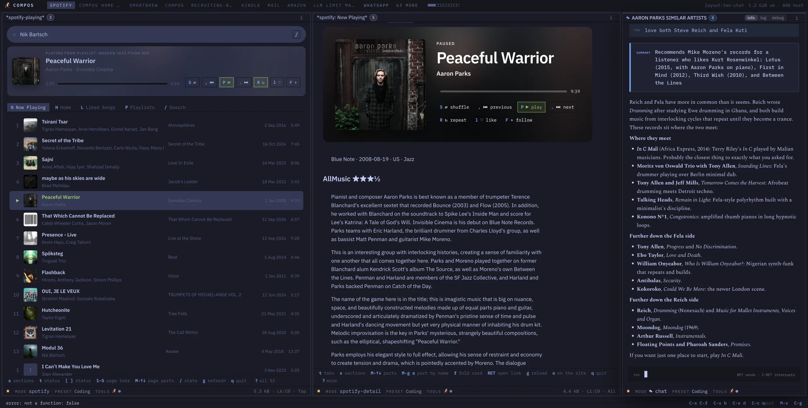
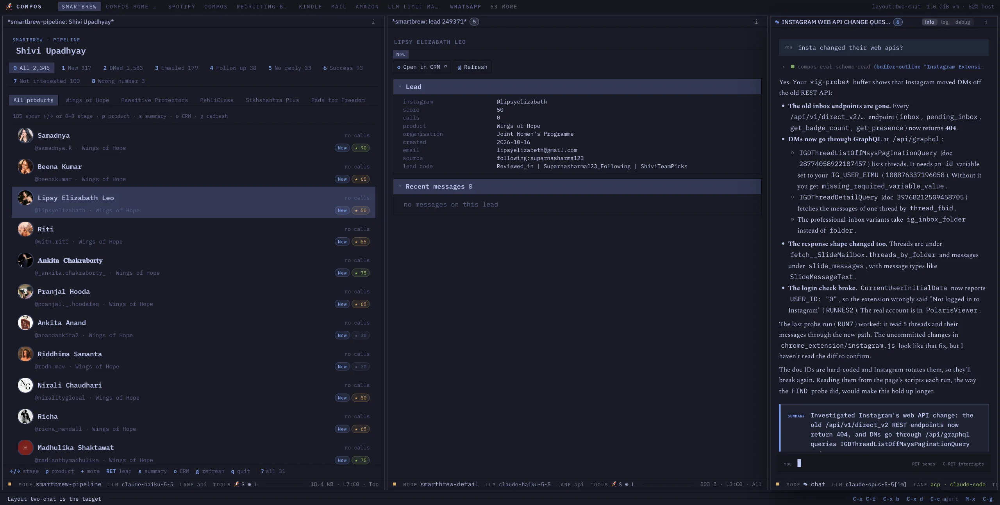
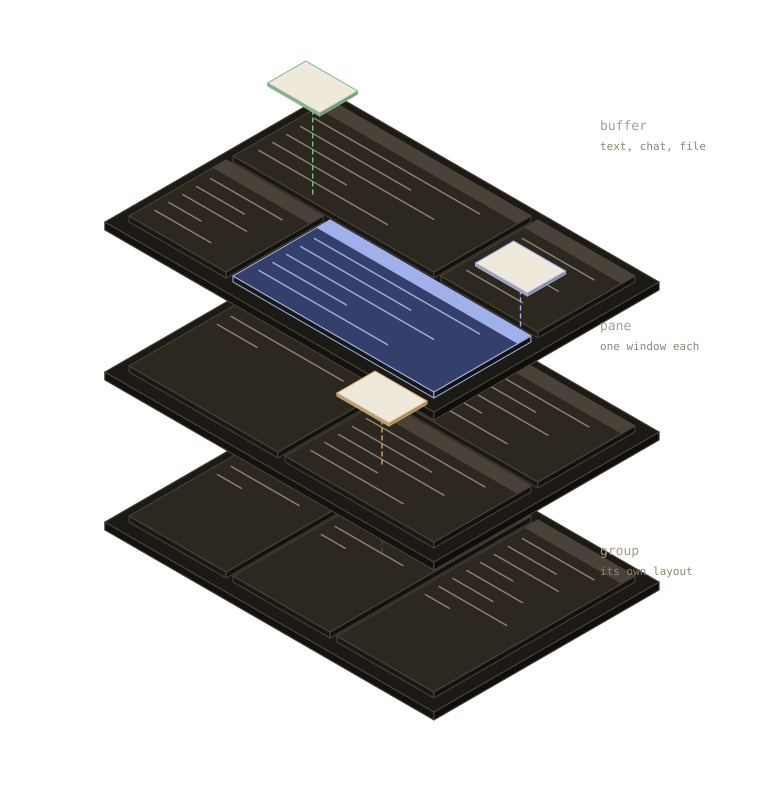

01 · fits you
Work the way you think.
Your workspace fits your habits, not the other way round. Need a new tool? Ask for it and have it in minutes. When your work changes, your tools change with it.
Compos is the hackable harness for power users to build the software you need - for work or for life.
Your whole working day in one place that fits the way you think. Your agents already know what you are working on, so you explain less and get more done, on the AI subscriptions you already pay for.


Build your app as you work with your agent. Over time you get software that fits your head, not the other way around.
Your workspace fits your habits, not the other way round. Need a new tool? Ask for it and have it in minutes. When your work changes, your tools change with it.
Your agent already knows what you are working on. Stop pasting, re-explaining and correcting. It stays on the task in front of it.
Attach an agent to anything.
Mail, Slack, presentations, notes, reading you name it you can point your agent at it. Stay in one place, get into your flow state.
Hand off the follow-ups, summaries and first drafts. Work comes back to you when it is ready, and nothing important goes out without your OK.
Compos agents can work across days. Sleeping, waking, listening to signals and working until the job gets done.
Point the agent to where your attention is. Compos agents are more like copilots than bounty hunters.

For the human in the loop.
You are an expert in your field. You are an operations maven. You love Excel. AI would supercharge you if only you had the correct tools.
Get through the inbox faster and never drop a follow-up. Approve drafts instead of writing them, and see the whole day at a glance.
Read, take notes and write in one place. Get help comparing sources and checking a draft against what you read, without losing the thread.
Get focused changes, not rewrites, from agents that see the code you see. Stay in the place you think, from the first note to the last commit.
Start with what you use today. Shape it a little more each week, with an agent that knows exactly what you are working on.